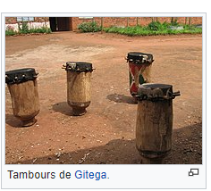
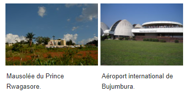

Culture
Au Burundi, la culture est fondée sur les traditions locales et influencée par les pays voisins.
Toutefois, la diffusion de la culture a été entravée par les nombreux troubles civils.
L'agriculture étant la principale industrie au Burundi,
un repas burundais typique se compose de patates douces, maïs et haricots.
En raison de son coût, on ne mange de la viande que quelquefois par mois.
Lorsque les Burundais se retrouvent lors de grandes fêtes,
ils boivent de l'impeke, une bière de sorgho, servie dans un pot unique.
Chaque personne y trempe sa paille en symbole d'unité.
Plus quotidiennement, les Burundais sont de très gros consommateurs de bière de banane,
qui revêt un nombre incalculable de noms kirundis en fonction de sa préparation et de son temps de fermentation.
La bière la plus consommée reste l'urwarwa.
Au Burundi, le taux d'alphabétisation est en hausse depuis la loi de 2005 sur la gratuité de l'éducation primaire.
Cela étant, le grand nombre d'élèves amenés sur les bancs de l'école a largement dépassé la capacité d'accueil des écoles,
les infrastructures et le nombre de professeurs.
Par ailleurs, seuls dix pour cent de garçons burundais ont accès à un enseignement secondaire.
La tradition orale est forte et relaie histoire et leçons de vie grâce aux contes, à la poésie et au chant.
L'imigani, l'indirimbo, l'amazina et l'ivyivugo sont quelques-uns des genres littéraires existant au Burundi.
Artisanat
L'artisanat est une importante forme d'art au Burundi.
La vannerie est très populaire ainsi que les masques, boucliers et les statues en bois faites par les artisans locaux.
Les Batwas, une ethnie pygmée qui représente à peine 1 % de la population, se sont quant à eux spécialisés dans la fabrication de poteries.
L'artisanat du Burundi, pourtant très riche, fin et dont certaines formes sont tout à fait inédites,
a beaucoup souffert de la guerre civile. Cependant, depuis la fin des années 2000, un renouveau très net se fait sentir.
Ce renouveau s'appuie en partie sur le développement des arts plastiques proprement dits,
auxquels les Burundais n'ont commencé à s'intéresser qu'assez récemment.
On trouvera ainsi à Bujumbura et à Gitega des artistes capables de sculpter des scènes
de village sur des bas-reliefs en bois et quelques peintres de paysages.
Tambourinaires du Burundi

ette section ne cite pas suffisamment ses sources (décembre 2012).
Le tambour est une partie importante de l'héritage culturel burundais.
Le Royal-Tambours du Burundi, qui s'est produit plus de quarante ans à travers le monde entier,
est connu pour ses tambours traditionnels comme les amashāko, les ibishikiso, l'inkiránya et kirotsa,
le petit tambour. La troupe se produit toujours, sur l'ancien site royal de Gishōra,
situé à quelques kilomètres (10 km précisément) au nord de Gitéga, la seconde ville en importance au Burundi.
La danse accompagne souvent les performances du tambour, musique populaire des célébrations et réunions de famille.
Les abatīmbo, dont on joue lors des cérémonies officielles et des rituels,
et le rythme rapide de l'abanyagasīmbo sont des danses burundaises.
À noter également l'umwĭrōnge (la flûte), l'ikēmbe, l'indonōngo, l'umudúri, l'inānga (la cithare),
l'indingiti (iningiti), les inzogera, l'inzamba, l'urutaro et l'inyagára41.
Tambours de Gitega.
La réputation des tambourinaires a dépassé les limites du Burundi pour devenir internationale.
En Afrique, ils symbolisent même la bonne orchestration du tambour.
Leur art est sacré. Il est aussi profane. C'est un lien mystique entre un pays, un peuple et un instrument.
« Ingoma », c'est à la fois le tambour, le départ (« Inkóko ni yó ngoma » :
On part au chant du coq), le royaume et l'époque.
Lors du spectacle, les tambourinaires du Burundi ou les ritualistes Batimbo forment généralement un groupe d'une vingtaine de personnes.
Spectacle de tambours traditionnels burundais à Bujumbura.
Ils entrent en scène, leur tambour sur la tête.
Ils chantent en même temps qu'ils dansent.
Disposés en arc de cercle autour du tambour central, l'inkiránya, ils attendent son signal.
Alors, répartis en deux groupes, les abanyaMashāko et les abanyaBishikizo battent leur rythme en harmonie.
Le tambourinaire soliste, celui qui bat l'inkiránya ou le tambour central, exécute une danse où se mêlent fantaisie et gravité.
Danse guerrière, sa gestuelle est significative.
Le soliste par moments mime le geste de se trancher la gorge.
Cela traduit son attachement à son pays : « Que je meure si je trahis le Tambour ! »
Tous les ritualistes batimbo le suivent parce qu'il est considéré comme leur roi et eux ses sujets.
Les tambourinaires ou le ritualistes batimbo du Burundi manient aussi l'humour, la satire et l'élégance.
Le danseur soliste se transforme en un gentil clown marchant sur les mains,
empruntant une démarche caricaturale et faisant des clins d'œil au public.
Les tambourinaires ou les ritualistes batimbo du Burundi occupent ikiránya ou jouent pour le public à tour de rôle.
Ils peuvent jouer seul, à deux, à trois voire à quatre.
Ils sont de véritables athlètes qui courent, sautent, se tordent le cou et/ou les hanches, font des enjambements, etc.
Les tambourinaires sautent, chantent, marchent autour des tambours
qu'ils battent tout en suivant la cadence qu'exige la danse de l'artiste qui danse devant eux, leur roi.
Au fond, il s'appelle le roi, car, outre que ses sujets battent les tambours en répondant à son invitation,
celui-ci peut arrêter la danse s'il est certain que c'est ce qui est nécessaire.
Danses traditionnelles
Chaque danse féminine (urwedengwe, ihunja, umutsibo, amarwandama, etc.)
ou masculine (ingoma, agasimbo, ou danse acrobatique du Buragane, intore
ou danse-parade des guerriers, umuyebe, etc.) a une signification qui lui est propre
et qui correspond à un événement précis ou à une profession bien déterminée.
Le chant, le rythme, l’expression corporelle, les mimes sont autant de signes distincts adaptés à chaque circonstance
et recherchés pour toucher à la fois le sens esthétique et l’esprit.
Les femmes montrent des évolutions chorégraphiques dans lesquelles l’élégance
et la souplesse des inyambo (c’est-à-dire les vaches aux longues cornes,
bêtes quasi sacrées dans le Burundi traditionnel) rivalisent avec les trépidations du train-train de la vie rurale que mènent les Barundi.
Monuments
À Bujumbura, sur le Belvédère surplombant la ville, se trouve le mausolée Prince Louis Rwagasore,
fondateur du parti Uprona et héros de l’indépendance du Burundi.
À 10 km de Bujumbura vers le sud, une pierre a été dressée pour commémorer la rencontre des explorateurs Stanley et Livingstone.
À 114 km de la capitale, sur la route Bujumbura-Ijenda-Matana, à Rutovu,
est érigée une pyramide sur la source la plus méridionale du Nil à plus de 2 000 m d’altitude.
En dehors de Bujumbura, parmi les sites naturels, on peut citer la faille de Nyakazu,
les chutes de Karera, les points de vue sur le lac Tanganyika à Vyanda ou à Kabonambo,
les lacs de la province de Kirundo, les plantations de thé à Teza ou à Rwegura.
Le Burundi possède aussi plusieurs sources d'eau chaude, encore peu aménagées.
Mausolée du Prince Rwagasore.
Mausolée du Prince Rwagasore.
Aéroport international de Bujumbura.
Aéroport international de Bujumbura.
Musées
Situé dans la deuxième ville du pays, Gitega,
le musée national conserve depuis 1955 une collection ethnographique constituée d’objets
liés à la royauté et à la cour tels qu’ils subsistaient dans la première moitié du xxe siècle,
une collection archéologique ainsi que des photos historiques.
On y trouve d'anciennes photos des rois, princes et reines du siècle dernier.
Elles sont entourées d’une multitude d’objets ayant appartenu aux hommes et aux femmes de ce pays :
parures, bijoux, paniers de toutes les régions, pots en terre pour une infinité d’usages,
calebasses pour puiser ou pour baratter, lances pour la guerre et la chasse, instruments de forge et de sculpture,
enfin les premières pièces de monnaie datant des diverses colonisations.
À Gishora (en), le site royal abrite aussi la reconstitution grandeur nature d’une habitation de type royal.
On visite toutes les cours attenantes à la maison principale puis la hutte ronde couverte
d’un toit en dôme tressé et recouverte d’une épaisse couche de chaume.
À Bujumbura, le musée vivant, tout près du lac, possède une volière où vivent quelques espèces
d’oiseaux du Burundi et un centre de recherches herpéthologiques qui expose dans ses grandes fosses
et vitrines beaucoup d’espèces de reptiles, notamment les crocodiles du lac Tanganyika.
Depuis 2011, un vrai centre culturel s'est développé autour de ce musée,
avec un amphithéâtre extérieur pour accueillir des représentations, ainsi que des boutiques d'artisanat local.
Théâtre
Le théâtre s'est récemment[Quand ?] développé au Burundi,
grâce notamment à deux compagnies :
la troupe Pili-Pili du Français Patrice Faye et la troupe Lampyre de Freddy Sabimbona.
Ces deux troupes se produisent régulièrement dans les enceintes de l'Institut français du Burundi (anciennement Centre culturel français).
Cinéma
Le premier long métrage burundais est Gito,
l'ingrat de Léonce Ngabo, qui sort en 1992.
Le personnage principal, Gito, est un homme qui a réussi à aller faire des étude
en France ;très fier de sa réussite et très imbu de lui-même,
il retourne au Burundi empli de mépris pour son pays natal,
avec la certitude que son parcours lui permettra de tout obtenir facilement,
que ce soit en affaires ou auprès des femmes. En 2012 sort un deuxième long métrage,
Les Pieds et les Mains (Amaguru n’amaboko) de Roland Rugero,
qui raconte les débuts d'un jeune joueur de football prometteur
dont l'oncle tente de détourner la bourse de soutien au profit de la corruption42.
En 2009 est créé le Festival international du Cinéma et de l'Audiovisuel du Burundi (Festicab),
qui vise à promouvoir et à récompenser les films, cinéastes et acteurs burundais43.
Lors de sa première édition, le festival ne met en compétition que trois films,
mais présente déjà une vingtaine de films tout genres et formats confondus lors de sa troisième édition en 201144.
Sport
Aux Jeux olympiques,
le Burundi a remporté une médaille d'or grâce à Vénuste Niyongabo en 1996 à Atlanta sur 5 000 mètres,
ainsi qu’une médaille d'argent aux Jeux de Rio en 2016 gagnée par Francine Niyonsaba sur 800 mètres.
Source